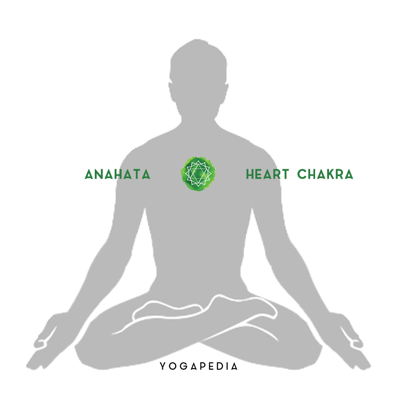
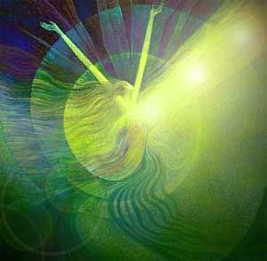

Anahata Chakra - Heart Chakra
Anahatha Chakra - Heart Centre
Anahata - Unstruck sound
The Anahata Chakra is situated in the centre of the chest, close to the heart. Its Mantra is YAM.
The colour of Anahata Chakra is light blue, the colour of the sky. The corresponding element is Air.
Air represents freedom and expansion. This means that in this Chakra our consciousness can expand
into infinity.
The Anahata Chakra is the seat of the Divine Self (Atma). In the symbolic picture of Anahata Chakra
there is a Lotus with twelve petals. These represent the Divine qualities of the heart, such as
bliss, peace, harmony, love, understanding, empathy, clarity, purity, unity, compassion, kindness
and forgiveness. However, the Heart Centre is also the centre of emotions and feelings. In its
symbolic image are two star-shaped, superimposed triangles. The tip of one triangle points upward,
the tip of the other points down. When the energy of the Anahata Chakra flows up towards spiritual
consciousness, our feelings are expressed as Bhakti, pure, Divine love and devotion. However, if our
consciousness sinks down to the spheres of worldly passion, our emotions become confused and
unbalanced. It is then that desire, jealousy, sadness and despair overwhelm us.
Anahata is the seat of Poesy. Concentration on this Chakra can develop one’s talent as an author or
poet. Another power arising from Anahata Chakra is Sankalpa Shakti, the power to fulfil desires.
When you wish for a desire to be fulfilled concentrate on it in your heart. The purer your Anahata
Chakra, the more swiftly the wish will be fulfilled.
The animal designated to represent Anahata Chakra is the Antelope, which reminds us of attentiveness
and alertness. The Divinities of this Chakra are Shiva and Parvati, representative of Consciousness
and Nature. Both should unite in harmony in this Chakra.

The Characteristics of Anahata Chakra
The life-giving element of air
The element of Anahata Chakra or Heart Chakra is the Air or Vayu. The Air symbolizes freedom of
expansion and breadth. A heart that is absolutely willing to give without restriction. Vayu is
connected physically to the sense of touch and emotional feelings. When the heart is open, a
person feels optimistic, friendly, and motivated to believe in themselves. Building fulfilling
relationships become easier when the Heart Chakra balanced, as we become more compassionate and
understanding towards others.
The renewing element of green color
The green color of the Anahata Chakra represents growth and renewed healthy relationships. The
color green is associated with nature, freshness, and tenderness. It is a healing and restful
color for the human eye. Green suggests stability and endurance. Serenity, calmness, balance,
and compassion for yourself, and others are the themes of Heart Chakra.

Signs of a Blocked Heart Chakra
Issues with the energy flow in the Heart Chakra can make us feel lonely, isolated, and unable to
connect. This is because when we are wounded and feel stuck in the past it leads to anxiety. A
person may be scared to share and trust any relationship. Any resolved disappointment from
childhood may affect our behavior as an adult. Any of the below-mentioned symptoms indicates
that the Heart Chakra requires rebalance and healing.
- Fear of rejection
- Loss of trust in a committed relationship
- Issues giving and receiving affection
- Over dependency in a relationship
- Distant behavior with people who care
- Tough and unemotional appearance while feeling vulnerable
- Physical symptoms such as heart palpitation, poor blood circulation, heart pain, angina, or
even problems like Asthma.
Positive affirmations for Heart chakra balance
Affirmations – can help to increase the positive energy associated with the Heart Chakra. Keeping
a journal of gratitude helps in acknowledging the gifts of the present moment. Some examples of
positive heart affirmations include:
- I am wanted and loved.
- My heart is open to love.
- I deeply and completely love and accept myself.
- I forgive myself.
- II live in a state of grace and gratefulness.
| Chakra Symbol |
 |
| Chakra Name |
Heart Chakra |
| Chakra Sanskrit Name |
Anahatha |
| Chakra Location |
Heart |
| Chakra Color |
Green |
| Chakra Seed Sound |
YAM |
| Chakra Element |
Air |
| Chakra Affirmation |
I Love |
| Chakra Gland |
Thymus |